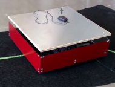
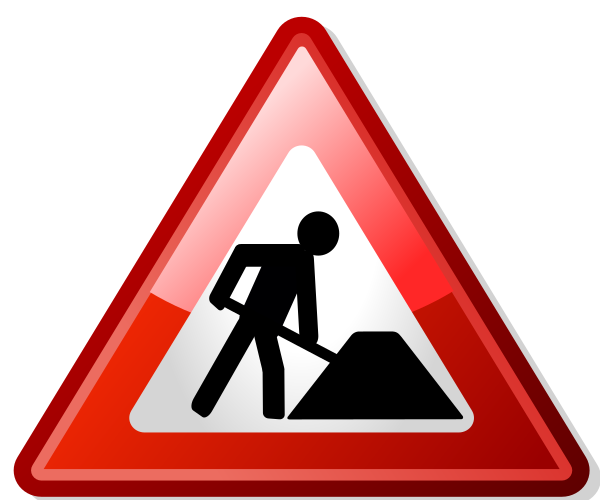

Strengthening Supply Chains
HAM Laboratories is working in collaboration with professors and business partners on robotic solutions, that aims to add-on and grow with your existing supply chain.
HAM Laboratories is working in collaboration with professors and business partners on robotic solutions, that aims to add-on and grow with your existing supply chain.
Multi-purpose VehiclesOur robotic vehicles covers a wide range of applications. This maximizes usage and simplifies resource management. If there's downtime for a pick, no problem. Move the robot to another one. Be sure to check out how these robots interact within a single ecosystem. Contact us today to see how our robotic vehicles can help your supply chain. |

Hermes AGVBuilt for dynamic line following applications. Simply lay down colored tape for your job and watch it follow it. |

Proteus AGVPositioned on four mecanum wheels, Proteus is one of the most versatile picking robots we've built. |
We have sensors mounted all around the robot with an accessible e-stop. Safety comes first, always.
All of our robots are intuitive. Minimal to no training is required. Manual and auto modes are supported.
With the affordable price, we do not offer quality trade-offs. We strive to squeeze the best out of every dollar you spend.
Collaboration with leading professors at the University of Waterloo, we are on the forefront of robotic research.
If it gets busy, not a problem, add more robots to the ecosystem. Our robots are designed to work in swarms.